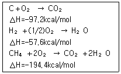
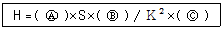

가스산업기사 (2018-04-28 기출문제)
1과목: 연소공학
1. 방폭구조 중 점화원이 될 우려가 있는 부분을 용기 내에 넣고 신선한 공기 또는 불연성가스 등의 보호기체를 용기의 내부에 넣음으로써 용기내부에는 압력이 형성되어 외부로부터 폭발성 가스 또는 증기가 침입하지 못하도록 한 구조는?
- 내압방폭구조
- 안전증방폭구조
- 본질안전방폭구조
- 압력방폭구조
(정답률: 73%)

2. 화염전파속도에 영향을 미치는 인자와 가장 거리가 먼 것은?
- 혼합기체의 농도
- 혼합기체의 압력
- 혼합기체의 발열량
- 가연 혼합기체의 성분조성
(정답률: 55%)
3. 기체 연료가 공기 중에서 정상연소 할 때 정상연소속도의 값으로 가장 옳은 것은?
- 0.1～10m/s
- 11～20m/s
- 21～30m/s
- 31～40m/s
(정답률: 82%)
4. 발화지연에 대한 설명으로 가장 옳은 것은?
- 저온, 저압일수록 발화지연은 짧아진다.
- 화염의 색이 적색에서 청색으로 변하는데, 걸리는 시간을 말한다.
- 특정 온도에서 가열하기 시작하여 발화시까지 소요되는 시간을 말한다.
- 가연성가스와 산소의 혼합비가 완전 산화에 근접할수록 발화지연은 길어진다.
(정답률: 85%)
5. 다음 중 가스 연소 시 기상 정지반응을 나타내는 기본반응식은?
- H＋O2 → OH＋O
- O＋H2 → OH＋H
- OH＋H2 → H2O＋H
- H＋O2＋M → HO2＋M
(정답률: 69%)
6. 비중(60/60°F)이 0.95인 액체연료의 API도는?
- 15.45
- 16.45
- 17.45
- 18.45
(정답률: 58%)
7. 메탄을 공기비 1.1로 완전 연소시키고자 할 때 메탄 1Nm3 당 공급해야할 공기량은 약 몇 Nm3인가?
- 2.2
- 6.3
- 8.4
- 10.5
(정답률: 50%)
8. 연소범위에 대한 설명 중 틀린 것은?
- 수소가스의 연소범위는 약 4～75v%이다.
- 가스의 온도가 높아지면 연소범위는 좁아진다.
- 아세틸렌은 자체분해폭발이 가능하므로 연소상한계를 100%로도 볼 수 있다.
- 연소범위는 가연성 기체의 공기와의 혼합에 있어 점화원에 의해 연소가 일어날 수 있는 범위를 말한다.
(정답률: 83%)
9. BLEVE(Boiling Liquid Expanding Vapour Explosion)현상에 대한 설명으로 옳은 것은?
- 물이 점성이 있는 뜨거운 기름 표면 아래서 끊을 때 연소를 동반하지 않고 overflow 되는 현상
- 물이 연소유(oil)의 뜨거운 표면에 들어갈 때 발생되는 overflow 현상
- 탱크바닥에 물과 기름의 에멀젼이 섞여 있을 때, 기름의 비등으로 인하여 급격하게 overflow 되는 현상
- 과열상태의 탱크에서 내부의 액화 가스가 분출, 일시에 기화되어 착화, 폭발하는 현상
(정답률: 81%)
10. 다음 반응식을 이용하여 메탄(CH4)의 생성열을 계산하면?

- △H=–17kcal/mol
- △H=–18kcal/mol
- △H=–19kcal/mol
- △H=–20kcal/mol
(정답률: 87%)
11. 공기 중 폭발한계의 상한 값이 가장 높은 가스는?
- 프로판
- 아세틸렌
- 암모니아
- 수소
(정답률: 84%)
12. 폭발에 관한 가스의 일반적인 성질에 대한 설명 중 틀린 것은?
- 안전간격이 클수록 위험하다.
- 연소속도가 클수록 위험하다.
- 폭발범위가 넓은 것이 위험하다.
- 압력이 높아지면 일반적으로 폭발범위가 넓어진다.
(정답률: 88%)
13. 기체혼합물의 각 성분을 표현하는 방법에는 여러 가지가 있다. 혼합가스의 성분비를 표현하는 방법 중 다른 값을 갖는 것은?
- 몰분율
- 질량분율
- 압력분율
- 부피분율
(정답률: 58%)
14. 공기비(m)에 대한 가장 옳은 설명은?
- 연료 1kg당 실제로 혼합된 공기량과 완전연소에 필요한 공기량의 비를 말한다.
- 연료 1kg당 실제로 혼합된 공기량과 불완전연소에 필요한 공기량의 비를 말한다.
- 기체 1m3당 실제로 혼합된 공기량과 완전연소에 필요한 공기량의 차를 말한다.
- 기체 1m3당 실제로 혼합된 공기량과 불완전연소에 필요한 공기량의 차를 말한다.
(정답률: 75%)
15. 기체연료의 연소에서 일반적으로 나타나는 연소의 형태는?
- 확산연소
- 증발연소
- 분무연소
- 액면연소
(정답률: 87%)
16. 아세톤, 톨루엔, 벤젠이 제4류 위험물로 분류되는 주된 이유는?
- 공기보다 밀도가 큰 가연성 증기를 발생시키기 때문에
- 물과 접촉하여 많은 열을 방출하여 연소를 촉진시키기 때문에
- 니트로기를 함유한 폭발성 물질이기 때문에
- 분해 시 산소를 발생하여 연소를 돕기 때문에
(정답률: 75%)
17. 다음 중 조연성가스에 해당하지 않는 것은?
- 공기
- 염소
- 탄산가스
- 산소
(정답률: 67%)
18. 다음 중 연소의 3요소에 해당하는 것은?
- 가연물, 산소, 점화원
- 가연물, 공기, 질소
- 불연재, 산소, 열
- 불연재, 빛, 이산화탄소
(정답률: 94%)
19. 표준상태에서 고발열량(총발열량)과 저발열량(진발열량)과의 차이는 얼마인가? (단, 표준상태에서 물의 증발잠열은 540kcal/kg이다.)
- 540kcal/kg-mol
- 1970kcal/kg-mol
- 9720kcal/kg-mol
- 15400kcal/kg-mol
(정답률: 61%)
20. 아세틸렌(C2H2, 연소범위：2.5~81%)의 연소범위에 따른 위험도는?
- 30.4
- 31.4
- 32.4
- 33.4
(정답률: 89%)
2과목: 가스설비
21. 용기종류별 부속품의 기호가 틀린 것은?
- 초저온용기 및 저온용기의 부속품 - LT
- 액화석유가스를 충전하는 용기의 부속품 - LPG
- 아세틸렌을 충전하는 용기의 부속품 - AG
- 압축가스를 충전하는 용기의 부속품 - LG
(정답률: 81%)
22. 펌프에서 공동현상(Cavitation)의 발생에 따라 일어나는 현상이 아닌 것은?
- 양정효율이 증가한다.
- 진동과 소음이 생긴다.
- 임펠러의 침식이 생긴다.
- 토출량이 점차 감소한다.
(정답률: 84%)
23. 황화수소(H2S)에 대한 설명으로 틀린 것은?
- 각종 산화물을 환원시킨다.
- 알칼리와 반응하여 염을 생성한다.
- 습기를 함유한 공기 중에는 대부분 금속과 작용한다.
- 발화온도가 약 450℃ 정도로서 높은 편이다.
(정답률: 73%)
24. LPG 이송설비 중 압축기를 이용한 방식의 장점이 아닌 것은?
- 펌프에 비해 충전시간이 짧다.
- 재액화현상이 일어나지 않는다.
- 사방밸브를 이용하면 가스의 이송방향을 변경할 수 있다.
- 압축기를 사용하기 때문에 베이퍼록 현상이 생기지 않는다.
(정답률: 59%)
25. 탱크에 저장된 액화프로판(C3H8)을 시간당 50kg씩 기체로 공급하려고 증발기에 전열기를 설치했을 때 필요한 전열기의 용량은 약 몇 kW인가? (단, 프로판의 증발열은 3740cal/gmol, 온도변화는 무시하고, 1cal는 1.163×10–6kW이다.)
- 0.2
- 0.5
- 2.2
- 4.9
(정답률: 37%)
26. LPG 공급, 소비설비에서 용기의 크기와 개수를 결정할 때 고려할 사항으로 가장 그 거리가 먼 것은?
- 소비자 가구수
- 피크 시의 기온
- 감압방식의 결정
- 1가구당 1일의 평균가스 소비량
(정답률: 70%)
27. 저온, 고압 재료로 사용되는 특수강의 구비 조건이 아닌 것은?
- 크리프 강도가 작을 것
- 접촉 유체에 대한 내식성이 클 것
- 고압에 대하여 기계적 강도를 가질 것
- 저온에서 재질의 노화를 일으키지 않을 것
(정답률: 85%)
28. LPG 배관의 압력손실 요인으로 가장 거리가 먼 것은?
- 마찰 저항에 의한 압력손실
- 배관의 이음류에 의한 압력손실
- 배관의 수직 하향에 의한 압력손실
- 배관의 수직 상향에 의한 압력손실
(정답률: 74%)
29. 고압가스용 안전밸브에서 밸브몸체를 밸브시트에 들어 올리는 장치를 부착하는 경우에는 안전밸브 설정 압력의 얼마 이상일 때 수동으로 조작되고 압력해지 시 자동으로 폐지되는가?
- 60%
- 75%
- 80%
- 85%
(정답률: 55%)
30. 정압기의 부속설비가 아닌 것은?
- 수취기
- 긴급차단장치
- 불순물 제거설비
- 가스누출검지통보설비
(정답률: 63%)
31. 구형(spherical type) 저장탱크에 대한 설명으로 틀린 것은?
- 강도가 우수하다.
- 부지면적과 기초공사가 경제적이다.
- 드레인이 쉽고 유지관리가 용이하다.
- 동일 용량에 대하여 표면적이 가장 크다.
(정답률: 72%)
32. 매설관의 전기방식법 중 유전양극법에 대한 설명으로 옳은 것은?
- 타 매설물에의 간섭이 거의 없다.
- 강한 전식에 대해서도 효과가 좋다.
- 양극만 소모되므로 보충할 필요가 없다.
- 방식전류의 세기(강도) 조절이 자유롭다.
(정답률: 56%)
33. 오토클레이브(Auto clave)의 종류 중 교반효율이 떨어지기 때문에 용기벽에 장애판을 설치하거나 용기 내에 다수의 볼을 넣어 내용물의 혼합을 촉진시켜 교반효과를 올리는 형식은?
- 교반형
- 정치형
- 진탕형
- 회전형
(정답률: 54%)
34. 배관의 관경을 50㎝에서 25㎝로 변화시키면 일반적으로 압력손실은 몇 배가 되는가?
- 2배
- 4배
- 16배
- 32배
(정답률: 72%)
35. 부탄의 C/H 중량비는 얼마인가?
- 3
- 4
- 4.5
- 4.8
(정답률: 65%)
36. 도시가스 제조에서 사이크링식 접촉분해(수증기개질)법에 사용하는 원료에 대한 설명으로 옳은 것은?
- 메탄만 사용할 수 있다.
- 프로판만 사용할 수 있다.
- 석탄 또는 코크스만 사용할 수 있다.
- 천연가스에서 원유에 이르는 넓은 범위의 원료를 사용할 수 있다.
(정답률: 81%)
37. 다음 중 암모니아의 공업적 제조방식은?
- 수은법
- 고압합성법
- 수성가스법
- 엔드류소호법
(정답률: 59%)
38. 케이싱 내에 모인 임펠러가 회전하면서 기체가 원심력 작용에 의해 임펠러의 중심부에서 흡입되어 외부로 토출하는 구조의 압축기는?
- 회전식 압축기
- 축류식 압축기
- 왕복식 압축기
- 원심식 압축기
(정답률: 75%)
39. 아세틸렌 용기의 다공물질의 용적이 30L, 침윤잔용적이 6L일 때 다공도는 몇 %이며 관련법상 합격여부의 판단으로 옳은 것은?
- 20%로서 합격이다.
- 20%로서 불합격이다.
- 80%로서 합격이다.
- 80%로서 불합격이다.
(정답률: 78%)
40. 저압배관의 관경 결정 공식이 다음 보기와 같을 때 ( )에 알맞은 것은? (단, H：압력손실, Q：유량, L：배관길이, D：배관관계, S：가스비중, K：상수)

- Ⓐ：Q2, Ⓑ：L, Ⓒ：D5
- Ⓐ：L, Ⓑ：D5, Ⓒ：Q2
- Ⓐ：D5, Ⓑ：L, Ⓒ：Q2
- Ⓐ：L, Ⓑ：Q5, Ⓒ：D2
(정답률: 75%)
3과목: 가스안전관리
41. 에어졸의 충전 기준에 적합한 용기의 내용적은 몇 L 이하여야 하는가?
- 1
- 2
- 3
- 5
(정답률: 79%)
42. 최고사용압력이 고압이고 내용적이 5m3인 일반도시가스 배관의 자기압력기록계를 이용한 기밀시험 시 기밀유지시간은?
- 24분 이상
- 240분 이상
- 48분 이상
- 480분 이상
(정답률: 68%)
43. 산화에틸렌의 제독제로 적당한 것은?
- 물
- 가성소다수용액
- 탄산소다수용액
- 소석회
(정답률: 68%)
44. 고압가스안전관리법에 적용받는 고압가스 중 가연성가스가 아닌 것은?
- 황화수소
- 염화메탄
- 공기 중에서 연소하는 가스로서 폭발한계의 하한이 10% 이하인 가스
- 공기 중에서 연소하는 가스로서 폭발한계의 상한 하한의 차가 20% 미만인 가스
(정답률: 69%)
45. 고압가스를 운반하는 차량의 안전 경계표지 중 삼각기의 바탕과 글자색은?
- 백색바탕 - 적색글씨
- 적색바탕 - 황색글씨
- 황색바탕 - 적색글씨
- 백색바탕 - 청색글씨
(정답률: 65%)
46. 수소의 특성에 대한 설명으로 옳은 것은?
- 가스 중 비중이 큰 편이다.
- 냄새는 있으나 색깔은 없다.
- 기체 중에서 확산 속도가 가장 빠르다.
- 산소, 염소와 폭발반응을 하지 않는다.
(정답률: 82%)
47. 가연성 및 독성가스의 용기 도색 후 그 표기 방법으로 틀린 것은?
- 가연성가스는 빨간색 테두리에 검정색 불꽃모양이다.
- 독성가스는 빨간색 테두리에 검정색 해골모양이다.
- 내용적 2L 미만의 용기는 그 제조자가 정한 바에 의한다.
- 액화석유가스 용기 중 프로판가스를 충전하는 용기는 프로판가스임을 표시하여야 한다.
(정답률: 58%)
48. 차량에 고정된 탱크에 의하여 가연성 가스를 운반할 때 비치하여야 할 소화기의 종류와 최소 수량은? (단, 소화기의 능력단위는 고려하지 않는다.)
- 분말소화기 1개
- 분말소화기 2개
- 포말소화기 1개
- 포말소화기 2개
(정답률: 81%)
49. 유해물질의 사고 예방 대책으로 가장 거리가 먼 것은?
- 작업의 일원화
- 안전보호구 착용
- 작업시설의 정돈과 청소
- 유해물질과 발화원 제거
(정답률: 83%)
50. 고압가스 특정제조시설의 저장탱크 설치방법 중 위해방지를 위하여 고압가스 저장 탱크를 지하에 매설할 경우 저장탱크 주위에 무엇으로 채워야 하는가?
- 흙
- 콘크리트
- 모래
- 자갈
(정답률: 88%)
51. 고압가스의 처리시설 및 저장시설기준으로 독성가스와 1종 보호시설의 이격거리를 바르게 연결한 것은?
- 1만 이하 - 13m 이상
- 1만 초과 2만 이하 - 17m 이상
- 2만 초과 3만 이하 - 20m 이상
- 3만 초과 4만 이하 - 27m 이상
(정답률: 60%)
52. 초저온 용기의 정의로 옳은 것은?
- 섭씨 －30℃ 이하의 액화가스를 충전하기 위한 용기
- 섭씨 －50℃ 이하의 액화가스를 충전하기 위한 용기
- 섭씨 －70°C 이하의 액화가스를 충전하기 위한 용기
- 섭씨 －90℃ 이하의 액화가스를 충전하기 위한 용기
(정답률: 69%)
53. 용기의 파열사고의 원인으로서 가장 거리가 먼 것은?
- 염소용기는 용기의 부식에 의하여 파열사고가 발생할 수 있다.
- 수소용기는 산소와 혼합충전으로 격심한 가스폭발에 의하여 파열사고가 발생할 수 있다.
- 고압 아세틸렌가스는 분해폭발에 의하여 파열사고가 발생할 수 있다.
- 용기 내 수증기 발생에 의해 파열사고가 발생할 수 있다.
(정답률: 77%)
54. 고압가스용 이음매 없는 용기의 재검사는 그 용기를 계속 사용할 수 있는지 확인하기 위하여 실시한다. 재검사 항목이 아닌 것은?
- 외관검사
- 침입검사
- 음향검사
- 내압검사
(정답률: 54%)
55. 의료용 산소 가스용기를 표시하는 색깔은?
- 갈색
- 백색
- 청색
- 자색
(정답률: 77%)
56. 차량에 고정된 탱크로 고압가스를 운반할 때의 기준으로 틀린 것은?
- 차량의 앞뒤 보기 쉬운 곳에 붉은 글씨로 “위험고압가스”라는 경계표지를 한다.
- 액화가스를 충전하는 탱크는 그 내부에 방파판을 설치한다.
- 산소탱크의 내용적은 1만 8천L를 초과하지 아니하여야 한다.
- 염소탱크의 내용적은 1만 5천L를 초과하지 아니하여야 한다.
(정답률: 83%)
57. 액화석유가스에 주입하는 부취제(냄새나는 물질)의 측정방법으로 볼 수 없는 것은?
- 무취실법
- 주사기법
- 시험가스 주입법
- 오더(Odor) 미터법
(정답률: 55%)
58. 시안화수소(HCN)에 첨가되는 안정제로 사용되는 중합방지제가 아닌 것은?
- NaOH
- SO2
- H2SO4
- CaCl2
(정답률: 56%)
59. 내용적이 50리터인 이음매 없는 용기 재검사 시 용기에 깊이가 0.5㎜를 초과하는 점부식이 있을 경우 용기의 합격여부는?
- 등급분류 결과 3급으로서 합격이다.
- 등급분류 결과 3급으로서 불합격이다.
- 등급분류 결과 4급으로서 불합격이다.
- 용접부 비파괴시험을 실시하여 합격여부 결정한다.
(정답률: 64%)
60. 다음 중 가장 무거운 기체는?
- 산소
- 수소
- 암모니아
- 메탄
(정답률: 73%)
4과목: 가스계측
61. 아르키메데스 부력의 원리를 이용한 액면계는?
- 기포식 액면계
- 차압식 액면계
- 정전용량식 액면계
- 편위식 액면계
(정답률: 66%)
62. 건습구 습도계에 대한 설명으로 틀린 것은?
- 통풍형 건습구 습도계는 연료 탱크 속에 부착하여 사용한다.
- 2개의 수은 유리온도계를 사용한 것이다.
- 자연 통풍에 의한 간이 건습구 습도계도 있다.
- 정확한 습도를 구하려면 3~5m/s 정도의 통풍이 필요하다.
(정답률: 62%)
63. 가스크로마토그래피와 관련이 없는 것은?
- 컬럼
- 고정상
- 운반기체
- 슬릿
(정답률: 76%)
64. 도시가스 제조소에 설치된 가스누출검지경보장치는 미리 설정된 가스농도에서 자동적으로 경보를 울리는 것으로 하여야 한다. 이때 미리 설정된 가스 농도란?
- 폭발 하한계 값
- 폭발 상한계 값
- 폭발하한계의 1/4 이하 값
- 폭발하한계의 1/2 이하 값
(정답률: 82%)
65. 연속동작 중 비례동작(P동작)의 특징에 대한 설명으로 옳은 것은?
- 잔류편차가 생긴다.
- 싸이클링을 제거할 수 없다.
- 외란이 큰 제어계에 적당하다.
- 부하변화가 적은 프로세스에는 부적당하다.
(정답률: 67%)
66. 압력의 종류와 관계를 표시한 것으로 옳은 것은?
- 전압＝동압 - 정압
- 전압＝게이지압＋동압
- 절대압＝대기압＋진공압
- 절대압＝대기압＋게이지압
(정답률: 81%)
67. 가스분석에서 흡수분석법에 해당하는 것은?
- 적정법
- 중량법
- 흡광광도법
- 헴펠법
(정답률: 77%)
68. 가스설비에 사용되는 계측기기의 구비조건으로 틀린 것은?
- 견고하고 신뢰성이 높을 것
- 주위 온도, 습도에 민감하게 반응할 것
- 원거리 지시 및 기록이 가능하고 연속 측정이 용이할 것
- 설치방법이 간단하고 조작이 용이하며 보수가 쉬울 것
(정답률: 79%)
69. 차압식 유량계 중 벤투리식(Venturi type)에서 교축기구 전후의 관계에 대한 설명으로 옳지 않은 것은?
- 유량은 유량계수에 비례한다.
- 유량은 차압의 평방근에 비례한다.
- 유량은 관지름의 제곱에 비례한다.
- 유량은 조리개 비의 제곱에 비례한다.
(정답률: 60%)
70. HCN 가스의 검지반응에 사용하는 시험지와 반응색이 좋게 짝지어진 것은?
- KI 전분지 - 청색
- 질산구리벤젠지 - 청색
- 염화파라듐지 - 적색
- 염화 제일구리착염지 - 적색
(정답률: 69%)
71. 2가지 다른 도체의 양끝을 접합하고 두 접점을 다른 온도로 유지할 경우 회로에 생기는 기전력에 의해 열전류가 흐르는 현상을 무엇이라고 하는가?
- 제백효과
- 존슨효과
- 스테판-볼츠만 법칙
- 스케링 삼승근 법칙
(정답률: 68%)
72. 고속회전이 가능하므로 소형으로 대유량의 계량기 가능하나 유지관리로서 스트레이너가 필요한 가스미터는?
- 막식가스미터
- 베인미터
- 루트미터
- 습식 미터
(정답률: 78%)
73. 신호의 전송방법 중 유압전송 방법의 특징에 대한 설명으로 틀린 것은?
- 전송거리가 최고 300m이다.
- 조작력이 크고 전송지연이 적다.
- 파이럿밸브식과 분사관식이 있다.
- 내식성, 방폭이 필요한 설비에 적당하다.
(정답률: 46%)
74. 파이프나 조절밸브로 구성된 계는 어떤 공정에 속하는가?
- 유동공정
- 1차계 액위공정
- 데드타임공정
- 적분계 액위공정
(정답률: 66%)
75. 시험대상인 가스미터의 유량이 350m3/h이고 기준 가스미터의 지시량이 330m3/h일 때 기준 가스미터의 기차는 약 몇 %인가?
- 4.4%
- 5.7%
- 6.1%
- 7.5%
(정답률: 62%)
76. 다음 중 유량의 단위가 아닌 것은?
- m3/s
- ft3/h
- m2/min
- L/s
(정답률: 76%)
77. 습식가스미터의 계량 원리를 가장 바르게 나타낸 것은?
- 가스의 압력 차이를 측정
- 원통의 회전수를 측정
- 가스의 농도를 측정
- 가스의 냉각에 따른 효과를 이용
(정답률: 54%)
78. 시정수(time constant)가 10초인 1차 지연형 계측기의 스텝응답에서 전체 변화의 95%까지 변화시키는데 걸리는 시간은?
- 13초
- 20초
- 26초
- 30초
(정답률: 39%)
79. 화학공장 내에서 누출된 유독가스를 현장에서 신속히 검지할 수 있는 방식으로 가장 거리가 먼 것은?
- 열선형
- 간섭계형
- 분광광도법
- 검지관법
(정답률: 54%)
80. 압력계 교정 또는 검정용 표준기로 사용되는 압력계는?
- 기준 분동식
- 표준 침종식
- 기준 박막식
- 표준 부르동관식
(정답률: 68%)